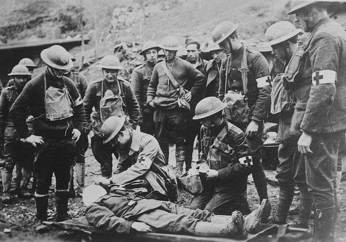
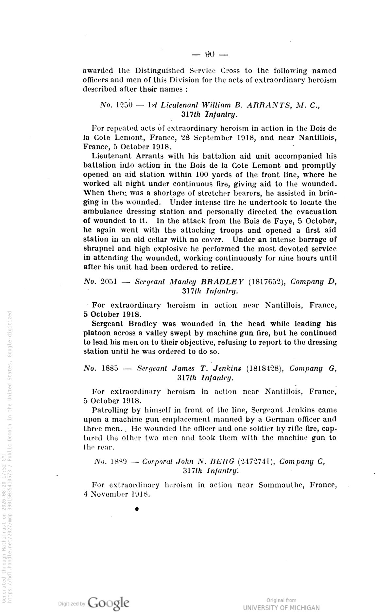
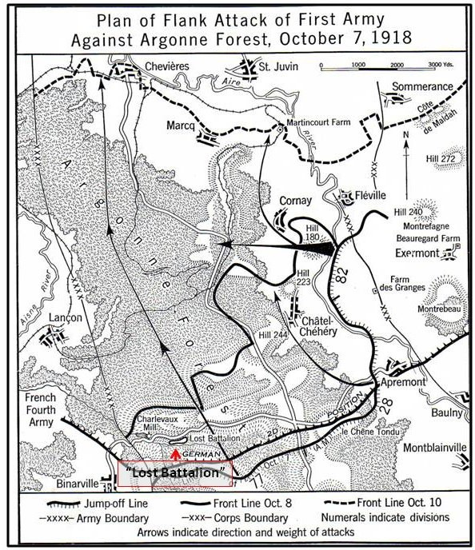
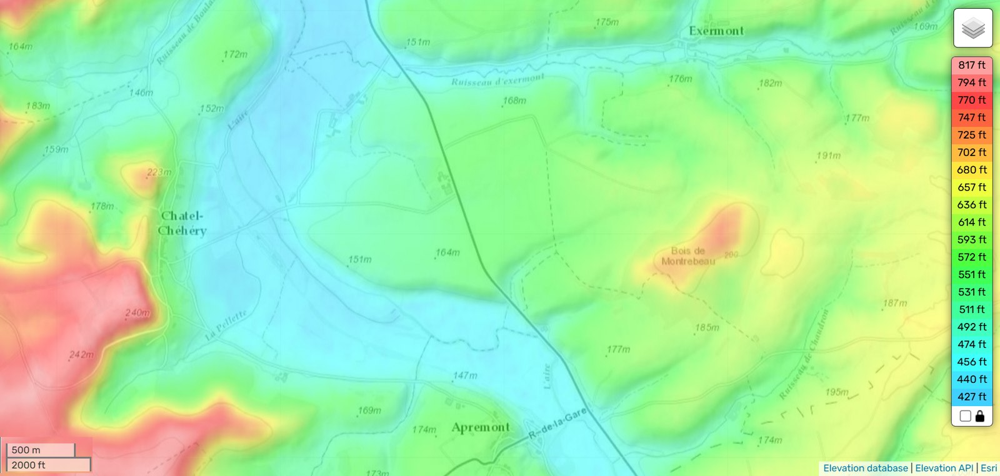
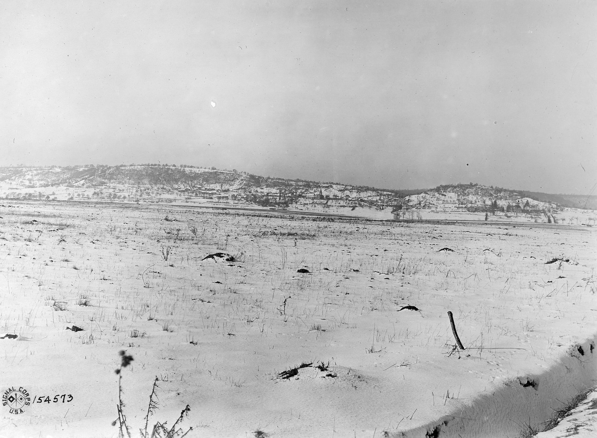
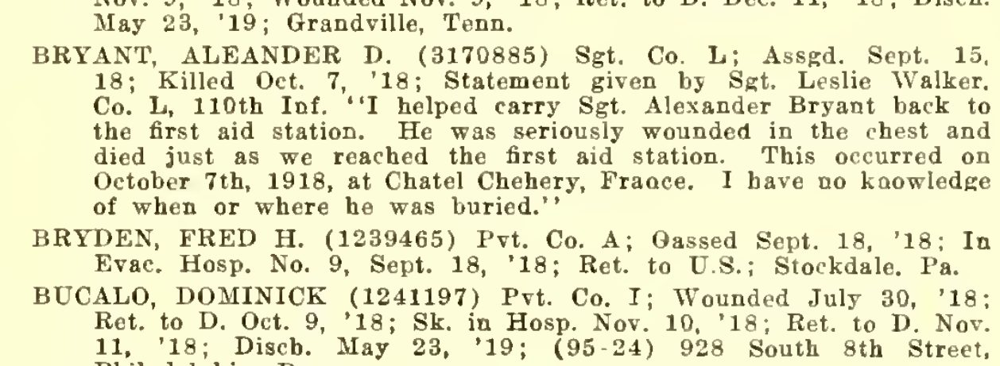
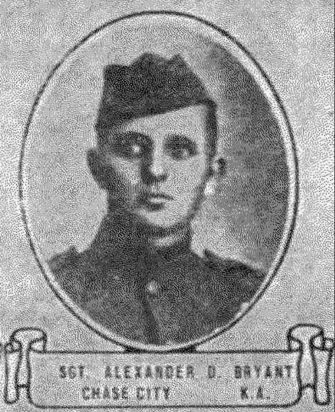
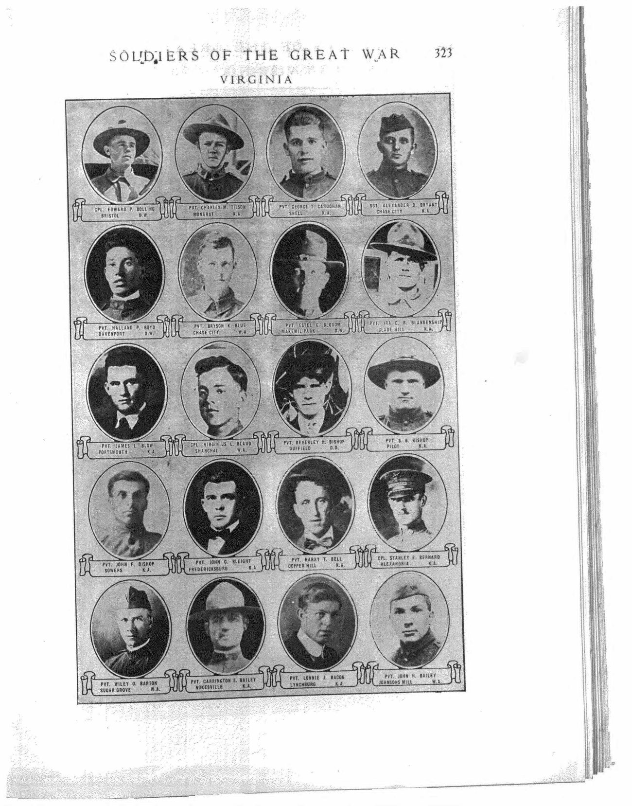
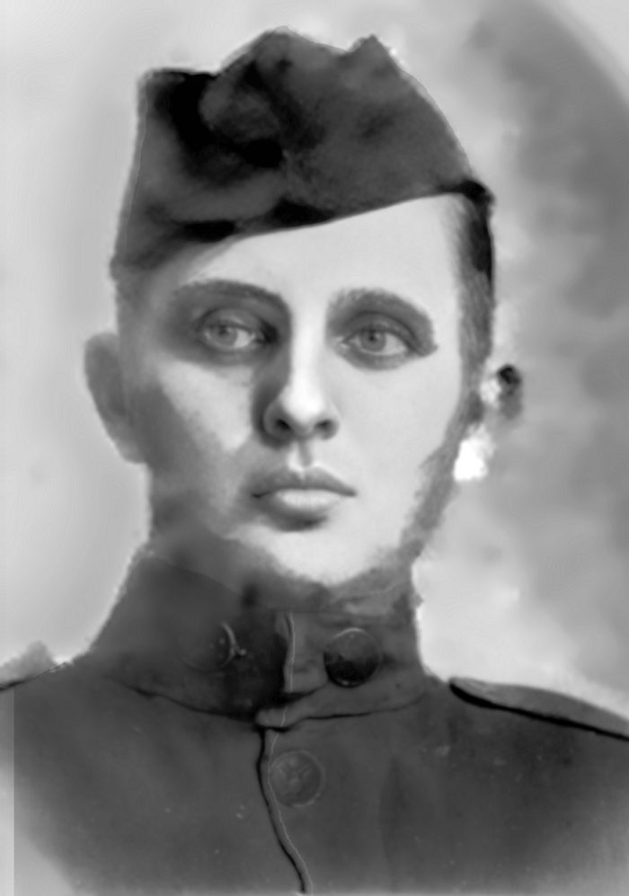

Three days apart, in different divisions, in the same offensive. This is the part nobody told me.
What follows happened inside four days. I did not know any of it until I was sixty-eight years old.
The 80th Division had spent the first four days of the month being shelled. The historian Edward Lengel is worth quoting at length, because the first paragraph is the reason for the second.
There, in the first four days of October, the German artillery east of the Meuse had subjected it to a perpetual, appalling bombardment. Rocked and blasted for four days, the division again began to crack, but Bullard and the division’s commander, General Cronkhite, refused to change their plans. The Blue Ridge boys, they insisted, must do their part in dismantling the eastern ramparts of the Kriemhilde Stellung.
The approaches to the first objective, the Bois des Ogons, were thick with corpses of men from the 4th and 79th Divisions, but their mute testament to the futility of frontal attacks failed to impress Cronkhite. “The reputation of the Blue Ridge Division is at stake,” he warned his men… Cronkhite’s officers and men, he later discovered, felt a “decided lack of confidence” in the plan. Edward G. Lengel, To Conquer Hell: The Meuse-Argonne, 1918 (New York: Henry Holt and Co., 2008), pp. 202–203
The lead battalion got lost in the dark and failed to reach the start line. David Bryant’s 1st Battalion, in its proper place, was ordered to step in and take the lead. By the time that was sorted out the artillery barrage had rolled on without them. They went anyway, half an hour late, without their barrage and without their tanks.
The First Battalion went over at about six o’clock that morning as the barrage scheduled didn’t drop at the proper time. They advanced a considerable distance and upon reaching the line of Hill 274, the first wave was met by very heavy machine gun fire from the north, northeast and east… only a few of our troops succeeded in reaching the edge of the Bois des Ogons. Edley Craighill, History of the 317th Infantry, p. 65

He was hit in the head and evacuated. He reached Base Hospital 86 at Mesves, in the Nièvre, on 8 October, and stayed seventy-six days.
There is a man in Company D whose record runs almost exactly alongside David Bryant’s, and the comparison is worth making because it is so nearly identical.
Sergeant Manley Bradley, serial 1817652 — thirty-six numbers from David’s 1817616, which means the same induction block, the same day, very probably the same room. The same company. Wounded in the head, near Nantillois, within a day of him.
For extraordinary heroism in action near Nantillois, France… Sergeant Bradley, after being severely wounded, refused to be evacuated and continued to lead his platoon. General Orders No. 20, printed in the History of the 317th Infantry, p. 90

To understand the seventh of October you have to know what had happened five days earlier, several miles to the west, to somebody else entirely.
On 2 October a body of about five hundred and fifty men of the 77th Division pushed into a ravine near Charlevaux Mill, got ahead of the units on either flank, and was cut off. They became known as the Lost Battalion. For five days they held a hillside without food, largely without water, under fire from three sides and at one point under their own artillery, refusing repeated demands to surrender.
The response was not only frontal. The 28th and 82nd Divisions were ordered to reorient — to break off their attacks northward and drive east across the Aire, into the flank and rear of the German force holding the Argonne. The intention was to make the encirclement untenable: to threaten the Germans around the pocket with being cut off themselves, and force them to pull back.

It worked. The pocket was relieved on the evening of 7 October, and something under two hundred of the men who had gone in walked out of it.
Far more Americans were killed or wounded getting them out than were ever trapped inside. That is not a criticism of the decision and it never has been. No one begrudges those losses, because the men who took them were keeping the faith that every American soldier understands: that you are not left where you fall, and that somebody will come.
Sergeant Alexander Dudley Bryant of Company L, 110th Infantry, was part of somebody coming.
His division attacked eastward toward the village of Châtel-Chéhéry, across the open floor of the Aire valley.


By 7 October, Company L was being run entirely by its sergeants. Its captain had gone up to command the battalion and then the regiment; every other officer of the company had been killed or wounded. William Kokos was commanding the company, and would shortly be commanding the battalion.
Somewhere on that open ground, in that company, on the morning of 7 October 1918, Sergeant Alexander Dudley Bryant was killed.
He had turned twenty-three the day before.
One man wrote down what happened, and it was printed in the regiment’s history after the war:
Bryant died of a chest wound while being carried to the first aid station. Sgt. Leslie Walker, Company L, 110th Infantry, in the published regimental history

There is a photograph of him, and this is the point at which it can honestly be shown.



The 82nd Division, attacking on the same reorientation, went at Hill 223 just outside Châtel-Chéhéry. On the morning of 8 October 1918 — the day after Alexander was killed — a corporal from Tennessee named Alvin York went up that hill with a patrol and came back with 132 prisoners. It became the most famous small-unit action of the American war.
David Bryant was shot in the head on 4 October at Nantillois. Alexander Bryant was killed on 7 October at Châtel-Chéhéry. On the day his brother died, David was being carried to a hospital train.
And that is the thing I did not know, standing at his fireplace fifty-two years later asking him about poison gas.